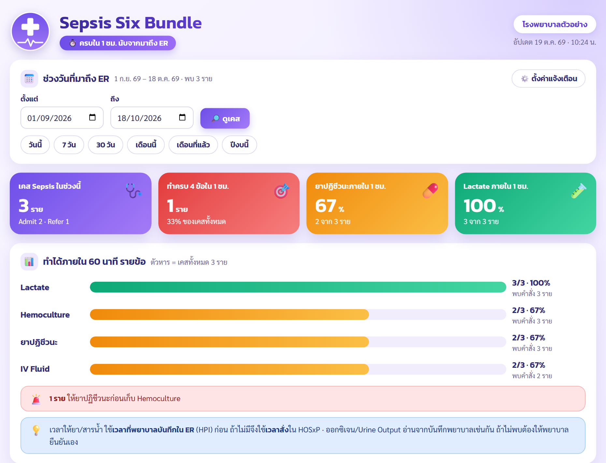
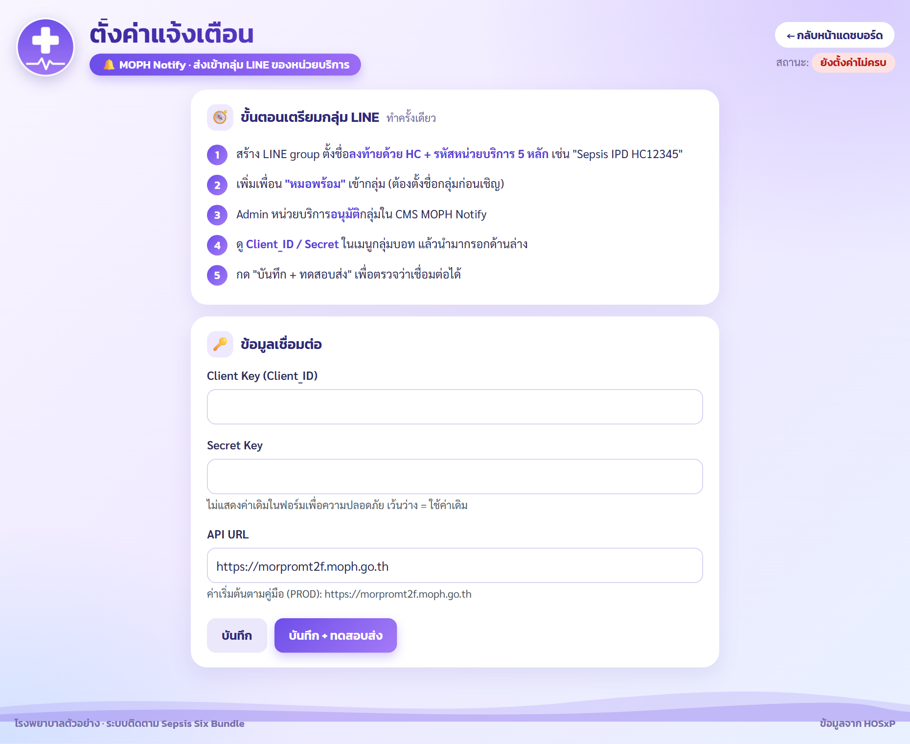
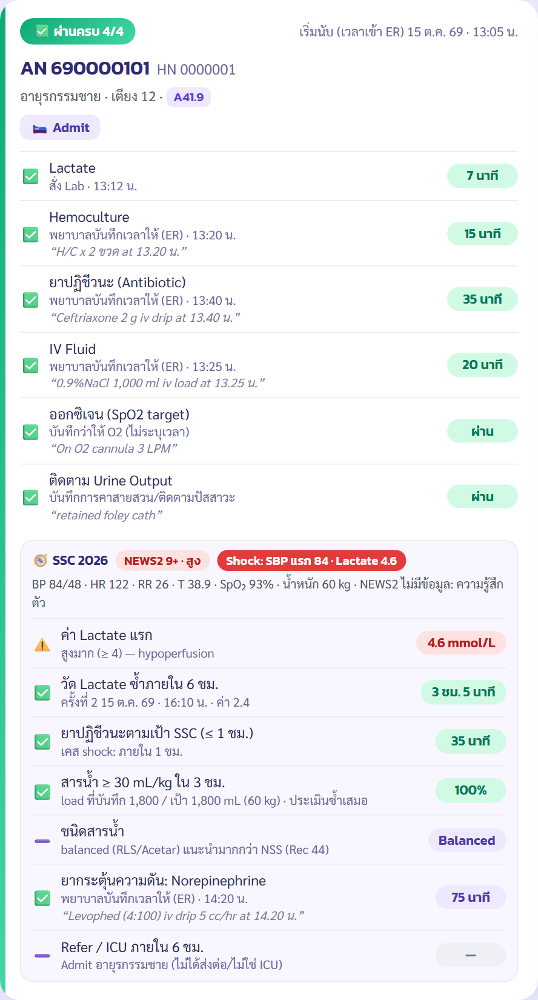
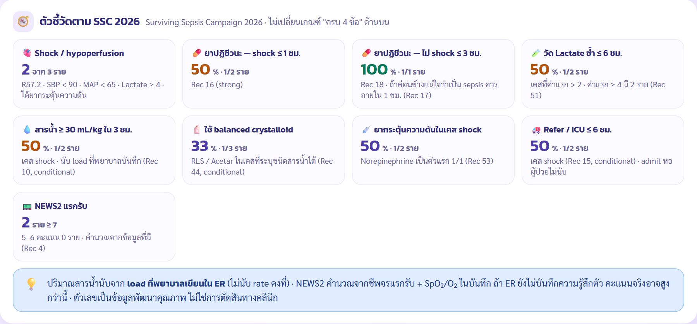
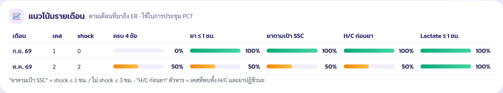
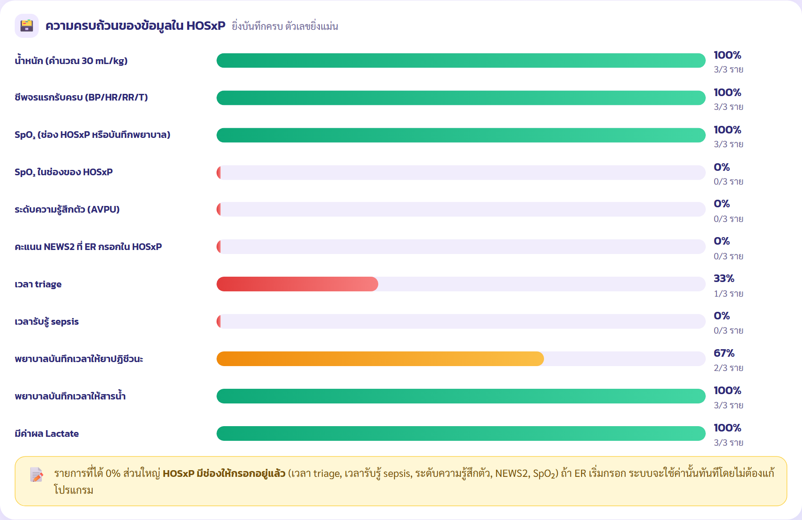
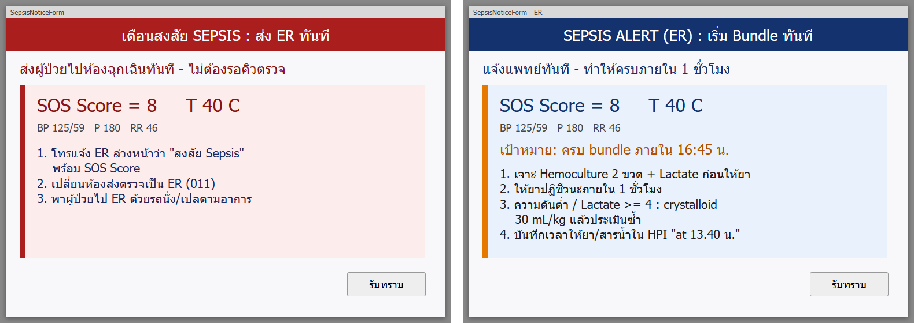

| ไฟล์ | ใช้ทำอะไร |
|---|---|
install.sh | สคริปต์ติดตั้งบน Linux (AlmaLinux / Rocky / RHEL 8-9, Ubuntu 20.04+) |
install_windows.bat | สคริปต์ติดตั้งบน Windows 10/11 หรือ Windows Server 2016+ (ดับเบิลคลิก) |
setup_check.py | ตรวจการเชื่อมต่อ HOSxP และค้นหารหัส lab/ยาของโรงพยาบาล |
.env.example | แม่แบบไฟล์ตั้งค่า (สคริปต์ติดตั้งสร้าง .env ให้) |
app.py, queries.py, scheduler.py ฯลฯ | ตัวโปรแกรม (Python / Flask) |
static/logo.png | โลโก้กลาง เปลี่ยนเป็นโลโก้ของโรงพยาบาลได้ (หัวข้อ 8) |
คู่มือ-Sepsis-Six-Bundle.pdf | คู่มือเล่มนี้ |
ระบบอ่านข้อมูลจาก HOSxP ทุก 15 นาที หาผู้ป่วยที่ได้รับการวินิจฉัย sepsis แล้วตรวจว่าทำ Sepsis Six Bundle ครบภายใน 1 ชั่วโมงหรือไม่ นับจากเวลาที่มาถึง ER ผลแสดงบนแดชบอร์ดในวง LAN และแจ้งเข้ากลุ่ม LINE ของทีม
visit ที่มี ICD10 A40.x, A41.x หรือ R57.2 ทั้งที่ ER/OPD และหลัง admit รวมเคสที่ refer หรือจบที่ ER
Lactate, Hemoculture, ยาปฏิชีวนะ, IV fluid ภายใน 60 นาที พร้อมดู O₂ และ Urine output จากบันทึกพยาบาล
การ์ด "พบเคสใหม่" พร้อมเวลาที่เหลือ และการ์ดสรุปผลหลังครบเวลา ไม่มีชื่อผู้ป่วย และ HN/AN เป็น xxx
ผู้ใช้ในโรงพยาบาลเปิดแดชบอร์ดผ่านเบราว์เซอร์ที่ http://<IP เครื่อง>:5800/

| รายการ | รายละเอียด |
|---|---|
| เครื่องติดตั้ง | เครื่องใดก็ได้ในวง LAN ที่เปิดตลอด 24 ชม. และต่อถึงฐานข้อมูล HOSxP ได้ เช่น เซิร์ฟเวอร์ Linux หรือ PC Windows สเปกขั้นต่ำ 2 CPU, RAM 2 GB, พื้นที่ว่าง 1 GB · แนะนำ Linux เพราะทำงานเป็น service เสถียรกว่า |
| Python | เวอร์ชัน 3.9 ขึ้นไป (Linux: dnf install python3.11 หรือ apt install python3 python3-venv ·
Windows: ติดตั้งจาก python.org และติ๊ก Add python.exe to PATH) |
| ฐานข้อมูล HOSxP | HOSxP v3 (MariaDB/MySQL) · ขอ user แบบ SELECT อย่างเดียว (หัวข้อ 3) · ถ้ามีเครื่อง replica (slave) แนะนำให้ต่อเครื่องนั้น |
| อินเทอร์เน็ตขาออก | เครื่องติดตั้งต้องออก https ได้ไปที่ pypi.org (ตอนติดตั้งไลบรารี) และ morpromt2f.moph.go.th (ส่งแจ้งเตือน)
ไม่ต้องเปิดพอร์ตขาเข้าจากอินเทอร์เน็ต |
| กลุ่ม LINE + MOPH Notify | Admin หน่วยบริการของ รพ. ใน CMS MOPH Notify เพื่ออนุมัติกลุ่ม (หัวข้อ 7) |
| รหัสหน่วยบริการ | รหัส 5 หลักของ รพ. ใช้ตั้งชื่อกลุ่ม LINE |
| เวลาเครื่อง | time zone Asia/Bangkok และเวลาตรงกับเครื่องฐานข้อมูล |
ให้ผู้ดูแล HOSxP รันคำสั่งนี้บนเครื่องฐานข้อมูล (เปลี่ยน IP และรหัสผ่านเป็นของ รพ.) ระบบไม่เขียนข้อมูลใด ๆ ลง HOSxP
-- IP ของเครื่องที่จะติดตั้งระบบ เช่น 192.168.1.50 · ตั้งรหัสผ่านใหม่ที่คาดเดายาก
CREATE USER 'sepsis_ro'@'192.168.1.50' IDENTIFIED BY 'ตั้งรหัสผ่านเอง';
GRANT SELECT ON hos.* TO 'sepsis_ro'@'192.168.1.50';
FLUSH PRIVILEGES;
ถ้าระบบติดตั้งบนเครื่องเดียวกับฐานข้อมูล ใช้ 'sepsis_ro'@'localhost' และ DB host 127.0.0.1
scp)unzip sepsis_bundle_v{{VERSION}}.zip
cd sepsis_bundle_v{{VERSION}}
sudo bash install.sh
ต้องการพอร์ตอื่นที่ไม่ใช่ 5800 ให้รัน sudo PORT=5900 bash install.shhos), DB user และรหัสผ่าน (พิมพ์แล้วไม่แสดงบนจอ)| ขั้น | งาน |
|---|---|
| 1 | หา Python 3.9+ และเตือนถ้า time zone ไม่ใช่ Asia/Bangkok |
| 2 | สร้าง user ระบบ sepsis (ไม่มีสิทธิ์ล็อกอิน) และคัดลอกโปรแกรมไปที่ /opt/sepsis_bundle |
| 3 | สร้าง .env จากคำตอบ (สิทธิ์ 600 อ่านได้เฉพาะ user sepsis) |
| 4 | สร้าง virtualenv และติดตั้งไลบรารี (Flask, PyMySQL, gunicorn ฯลฯ) |
| 5 | รัน setup_check.py --write ตรวจฐานข้อมูลและเติมรหัส lab/ยาลง .env (หัวข้อ 6) — ถ้าต่อฐานข้อมูลไม่ได้จะหยุดตรงนี้ |
| 6 | ตั้ง systemd service sepsis-bundle (gunicorn) ให้เปิดเองตอนบูต |
| 7 | ตั้ง cron /etc/cron.d/sepsis-bundle รัน scheduler.py ทุก 15 นาที และเปิดพอร์ตใน firewalld/ufw |
| 8 | ตรวจว่า service ทำงานและหน้าเว็บตอบสนอง |
.env, โฟลเดอร์ data/ (ค่า MOPH Notify, ประวัติการแจ้งเตือน) และโลโก้ที่เปลี่ยนไว้/opt ผ่าน systemd ซึ่งใช้ได้ตามค่าปกติของ AlmaLinux/Rocky ถ้าบังคับนโยบายเข้มกว่าปกติ ให้ดู journalctl -u sepsis-bundlehttps://www.python.org/downloads/ — หน้าแรกของตัวติดตั้งติ๊ก "Add python.exe to PATH"install_windows.bat → กด Yes เมื่อ Windows ขอสิทธิ์ Administrator| สิ่งที่สร้าง | รายละเอียด |
|---|---|
C:\sepsis_bundle | ตัวโปรแกรม, .env (สิทธิ์เฉพาะ Administrators/SYSTEM), data\ |
Task SepsisBundle-Web | เปิดหน้าเว็บ (waitress) อัตโนมัติตอนเปิดเครื่อง รีสตาร์ทเองถ้าหลุด |
Task SepsisBundle-Scheduler | ดึงเคสและแจ้งเตือนทุก 15 นาที |
Firewall rule Sepsis Bundle 5800 | เปิดพอร์ตเฉพาะเครือข่าย Domain/Private |
เปลี่ยนโฟลเดอร์หรือพอร์ต: เปิด PowerShell แบบ Administrator ในโฟลเดอร์ที่แตกไฟล์ แล้วรัน
powershell -ExecutionPolicy Bypass -File install_windows.ps1 -AppDir D:\sepsis_bundle -Port 5900
รหัส lab และรหัสยาใน HOSxP ต่างกันในแต่ละโรงพยาบาล สคริปต์ติดตั้งรัน setup_check.py --write ให้แล้ว ซึ่งค้นจากชื่อรายการ
เลือกเฉพาะรายการที่มีการใช้จริงใน 1 ปี แล้วเขียนลง .env ต้องให้ทีมตรวจทานทุกครั้ง
# Linux cd /opt/sepsis_bundle && sudo -u sepsis .venv/bin/python setup_check.py # Windows (PowerShell แบบ Administrator) cd C:\sepsis_bundle; .venv\Scripts\python.exe setup_check.py
=== 5. รหัสรายการของ รพ. (* = ตั้งไว้ใน .env แล้ว) ======
Lactate (lab_items) → SEPSIS_LACTATE_LAB_ITEMS
* 2240 ใช้ 908 ครั้ง Lactate
Hemoculture แบบรายการค่าบริการ (nondrugitems) → SEPSIS_HEMOCULTURE_ICODES
* 3071625 ใช้ 645 ครั้ง Hemoculture 1 ขวด / 2 ขวด / 3 ขวด
3160173 ใช้ 0 ครั้ง Hemoculture
IV fluid crystalloid 1000 ml (drugitems) → SEPSIS_IV_FLUID_ICODES
* 1000187 ใช้ 5306 ครั้ง NSS INJ. 0.9 % , 1000 ML
* 1000183 ใช้ 104 ครั้ง RLS-LACTATED RINGER 1000 ml.
| ค่าใน .env | ใส่อะไร | ตรวจกับใคร |
|---|---|---|
SEPSIS_LACTATE_LAB_ITEMS | รหัส lab_items ของ Lactate | ห้อง lab |
SEPSIS_HEMOCULTURE_LAB_ITEMS | รหัส lab_items ของ Hemoculture ถ้า รพ. สั่งผ่านระบบ lab | ห้อง lab |
SEPSIS_HEMOCULTURE_ICODES | icode ใน nondrugitems ถ้า รพ. สั่ง Hemoculture เป็นรายการค่าบริการ | ห้อง lab / การเงิน |
SEPSIS_IV_FLUID_ICODES | icode ของ NSS / RLS / Acetar ถุง 1000 ml (ไม่ใส่ NSS 100 ml ที่ใช้ผสมยา) | ห้องยา |
SEPSIS_NOREPINEPHRINE_ICODES | icode ของ Norepinephrine (Levophed) | ห้องยา |
SEPSIS_DOPAMINE_ICODES | icode ของ Dopamine (ใช้เตือนเมื่อใช้ก่อน NE) | ห้องยา |
SEPSIS_ICU_WARDS | รหัส ward ที่เป็น ICU (ถ้ามี) — ใส่เองใน .env ไม่มีในการค้นอัตโนมัติ | IT / หอผู้ป่วย |
Hemoculture ใส่ได้ทั้งสองแบบพร้อมกัน ระบบใช้เวลาที่เร็วที่สุด · คั่นหลายรหัสด้วยจุลภาค เช่น 1000187,1000183
antibiotic = 'Y' ในทะเบียนยา (drugitems) ของ HOSxP
ถ้า setup_check เตือนว่าไม่มี ให้ห้องยาตั้งค่าใน HOSxP ก่อนsetup_check ยังแสดงตารางรหัสสถานะจำหน่าย (ovstost, er_dch_type) ว่าแต่ละรหัสนับเป็น Refer / เสียชีวิต / กลับบ้าน ฯลฯ
ถ้า รพ. ตั้งรหัสต่างจากมาตรฐาน แก้ได้ใน .env (หัวข้อ 15)
แก้ .env แล้วต้อง restart หน้าเว็บ (หัวข้อ 17) — งานแจ้งเตือนอ่านค่าใหม่เองในรอบถัดไป
MOPH Notify (หมอพร้อม) ส่งข้อความเข้ากลุ่ม LINE ของหน่วยบริการโดยไม่มีค่าใช้จ่าย ทำครั้งเดียว:
Sepsis ER HC12345 — ต้องตั้งชื่อก่อนเชิญหมอพร้อมhttp://<IP เครื่อง>:5800/settings (หรือปุ่ม "⚙️ ตั้งค่าแจ้งเตือน" บนแดชบอร์ด) แล้วกรอกรหัส —
ถ้าตั้งรหัสดู HN/AN ไว้ (หัวข้อ 9) ใช้รหัสเดียวกัน ระบบถามทุกครั้งที่เข้าหน้านี้ ·
ถ้าไม่ได้ตั้ง ใช้รหัสผ่าน SEPSIS_SETTINGS_PASSWORD จาก .env
(ชื่อผู้ใช้อะไรก็ได้ · Linux: install.sh สร้างให้ · ถ้าไม่ตั้งทั้งสองค่า เปิดได้เฉพาะบนเครื่องเซิร์ฟเวอร์ที่ http://127.0.0.1:5800/settings)
กรอก Client Key และ Secret Key แล้วกด บันทึก + ทดสอบส่งถ้าสำเร็จ กลุ่ม LINE จะได้การ์ดทดสอบ 2 ใบ (ข้อมูลสมมติ) ค่าที่บันทึกเก็บใน data/moph_settings.json ไม่ต้อง restart

LINE_CHANNEL_ACCESS_TOKEN และ LINE_TO ใน .env · LINE Notify เดิมปิดบริการแล้วตั้งแต่ มี.ค. 2568SEPSIS_HOSPITAL_NAME ใน .env แล้ว restart หน้าเว็บ (ชื่อแสดงบนแดชบอร์ดและหัวการ์ด LINE)static/logo.png ด้วยโลโก้ของ รพ. แนะนำ PNG สี่เหลี่ยมจัตุรัส 256×256 px พื้นโปร่งใส
และ static/favicon.png (ไอคอนแท็บเบราว์เซอร์ 64×64 px) · ไม่ต้อง restart แค่รีเฟรชหน้าเว็บตอนอัปเดตเวอร์ชัน สคริปต์ติดตั้งจะไม่ทับโลโก้ที่เปลี่ยนไว้

ข้อมูลดิบแบบ JSON ดึงได้ที่ /api/data.json?d1=2026-10-01&d2=2026-10-31 (ใช้ทำรายงานต่อ — HN/AN ถูกซ่อนเหมือนหน้าแดชบอร์ด)
ตั้งรหัสแล้ว แดชบอร์ดจะแสดง HN/AN/VN เป็น xxx จนกว่าจะกรอกรหัส — คนที่เดินผ่านจอหรือเปิดแดชบอร์ดค้างไว้จะไม่เห็นเลขระบุตัวผู้ป่วย
SEPSIS_UNLOCK_HOURS ชั่วโมง (ค่าเริ่มต้น 8) — เครื่องอื่นยังเห็น xxxหน้าตั้งค่าแจ้งเตือนใช้รหัสเดียวกัน แต่ถามใหม่ทุกครั้งที่เข้า (กรอกแล้วใช้ได้ 10 นาที และล็อกเองเมื่อกลับหน้าแดชบอร์ด) · การปลดดู HN/AN ไม่ได้เปิดหน้าตั้งค่าให้ และการกรอกรหัสเข้าหน้าตั้งค่าไม่ได้ปลดดู HN/AN · กรอกรหัสผิดระบบหน่วง 1 วินาทีต่อครั้ง
ตั้งรหัส (ผู้ดูแลระบบ) — ระบบเก็บเฉพาะ hash ของรหัส ไม่เก็บรหัสจริงในไฟล์ใด สร้าง hash และกุญแจ session ด้วยคำสั่ง
(Windows ใช้ C:\sepsis_bundle\.venv\Scripts\python.exe แทน):
# พิมพ์รหัสที่ต้องการ (ไม่แสดงบนจอ) ได้ค่า pbkdf2:sha256:... /opt/sepsis_bundle/.venv/bin/python -c "import getpass; from werkzeug.security import generate_password_hash as g; print(g(getpass.getpass(), method='pbkdf2:sha256'))" # กุญแจ session แบบสุ่ม /opt/sepsis_bundle/.venv/bin/python -c "import secrets; print(secrets.token_hex(32))"
ใส่ใน .env โดยครอบ hash ด้วยเครื่องหมาย ' ' (ใน hash มีตัว $) แล้ว restart หน้าเว็บ:
SEPSIS_VIEW_PASSWORD_HASH='pbkdf2:sha256:1000000$....' SEPSIS_SECRET_KEY=ค่าสุ่มจากคำสั่งที่สอง SEPSIS_UNLOCK_HOURS=8
SEPSIS_SECRET_KEY ด้วย — ถ้าไม่ตั้ง ทุกครั้งที่ restart ทุกคนต้องกรอกรหัสใหม่
และบน Linux ที่รันหลาย worker สถานะปลดล็อกจะหลุดสลับไปมา · ไม่ตั้ง SEPSIS_VIEW_PASSWORD_HASH = แดชบอร์ดแสดง HN/AN ตามปกติ
· เปลี่ยนรหัส: สร้าง hash ใหม่แทนค่าเดิม แล้ว restartปรับตาม Surviving Sepsis Campaign: International Guidelines 2026 (ตีพิมพ์ 23 มี.ค. 2026) ที่เน้นให้โรงพยาบาลมีระบบติดตามคุณภาพ (Rec 1, strong) — ตัวชี้วัดชุดนี้แสดงเพิ่ม ไม่เปลี่ยนเกณฑ์ "ครบ 4 ข้อ" เดิม ตัวเลขย้อนหลังจึงยังเทียบกันได้

| ตัวชี้วัด | นิยามในระบบ | อ้างอิง SSC 2026 |
|---|---|---|
| Shock / hypoperfusion | ข้อใดข้อหนึ่ง: ICD10 R57.2, SBP แรกรับ < 90, MAP < 65, BP ต่ำสุดในบันทึก ER < 90, Lactate แรก ≥ 4, ได้ยากระตุ้นความดัน | ใช้กำหนดเป้าด้านล่าง |
| ยาปฏิชีวนะตามเป้า | เคส shock ภายใน 1 ชม. · ไม่ shock ภายใน 3 ชม. (นับจาก time-zero) | Rec 16 (strong) · Rec 18 · probable sepsis ควร 1 ชม. (Rec 17) |
| ค่า Lactate และการวัดซ้ำ | ค่าผลครั้งแรก · ถ้า > 2 ต้องมีการสั่งตรวจซ้ำ (ห่างครั้งแรก ≥ 30 นาที) ภายใน 6 ชม. — แสดงเวลาวัดซ้ำแม้ช้าเกิน | Rec 8, Rec 51 |
| สารน้ำ 30 mL/kg | เฉพาะเคส shock · เป้า = 30 × น้ำหนัก (opdscreen.bw) · ปริมาณที่ให้ = load/bolus ที่พยาบาลเขียนใน ER ภายใน 3 ชม. (ไม่นับ rate คงที่ เช่น 80 cc/hr) · เป็นข้อมูลประกอบ ไม่ใช่เกณฑ์ผ่าน/ไม่ผ่าน | Rec 10 (conditional) + ประเมินซ้ำเสมอ |
| ชนิดสารน้ำ | Balanced (RLS / Acetar / Sterofundin / Plasma-Lyte) หรือ NSS จากบันทึกพยาบาล | Rec 44 (conditional) |
| ยากระตุ้นความดัน | ตัวแรกและเวลาเริ่ม จากบันทึกพยาบาล (Levophed / norepinephrine / dopamine) และคำสั่งยาตามรหัสใน .env · เตือนถ้าใช้ dopamine ก่อน | Rec 53 (strong) · Rec 12 · Rec 13 |
| Refer / ICU ภายใน 6 ชม. | เฉพาะเคส shock · refer หรือ admit เข้า ward ที่ตั้งใน SEPSIS_ICU_WARDS ภายใน 6 ชม. · admit หอผู้ป่วยทั่วไปแสดงเป็น "—" | Rec 15 (conditional) |
| NEWS2 แรกรับ | ใช้คะแนนที่ ER กรอกใน HOSxP ถ้ามี ไม่งั้นคำนวณจาก RR, SpO₂, O₂, SBP, HR, ความรู้สึกตัว (AVPU), อุณหภูมิ — ข้อที่ไม่มีข้อมูลจะแสดง "+" และบอกว่าขาดตัวไหน | Rec 4 (strong): ใช้ NEWS/NEWS2/MEWS/SIRS แทน qSOFA |
เลือกช่วงตั้งแต่ 2 เดือนขึ้นไป (เช่นปุ่ม "ปีงบนี้") จะเห็นตารางรายเดือน: จำนวนเคส, shock, ครบ 4 ข้อ, ยา ≤ 1 ชม., ยาตามเป้า SSC, H/C ก่อนยา และ Lactate ≤ 1 ชม. — ใช้ประกอบการประชุม PCT

บอกว่าข้อมูลต้นทางใน HOSxP ถูกบันทึกครบแค่ไหน เช่น น้ำหนัก ชีพจร SpO₂ ระดับความรู้สึกตัว NEWS2 เวลา triage และเวลาที่พยาบาลบันทึกการให้ยา ช่องที่ได้ 0% ส่วนใหญ่ HOSxP มีให้กรอกอยู่แล้ว — เมื่อ ER เริ่มกรอก ระบบใช้ค่านั้นทันทีโดยไม่ต้องแก้โปรแกรม และตัวชี้วัดจะแม่นขึ้น

ส่วนเสริม (โฟลเดอร์ hosxp_alert/) — เมื่อพยาบาลบันทึกชีพจรในหน้าซักประวัติ แล้ว SOS Score > 3 ร่วมกับไข้ ≥ 38 °C หรือตัวเย็น < 36 °C
(อายุ ≥ 15 ปี) HOSxP จะขึ้นหน้าต่างเตือนทันที โดยไม่ต้องรอแพทย์ลงรหัส ICD · ใช้จริงที่ รพ.วังน้ำเขียว (HOSxP 3.69.9.24) เตือนเฉลี่ย ~1 ครั้ง/วัน

opdscreen.screen_dep) เป็นรหัส ER ของ รพ. หรือมีแถว er_regist แล้วsys_app_script ชื่อ SYS_VN_SCRIPT ไม่ต้องติดตั้งที่เครื่องพยาบาล# 1) ตรวจ: script เดิม, รหัสแผนก ER ที่แนะนำ, ประมาณจำนวนการเตือน (อ่านอย่างเดียว) python install_alert.py check --host <IP ฐาน> --user sepsis_deploy # 2) ติดตั้งฐานทดสอบก่อน แล้วทดสอบใน HOSxP python install_alert.py install --host <IP ฐานทดสอบ> --db hos_test --user <user> --er-deps 011 # 3) ติดตั้งฐานจริง (สำรอง script เดิมลง backups/ อัตโนมัติ) python install_alert.py install --host <IP ฐานหลัก> --user sepsis_deploy --er-deps 011 # ย้อนกลับ python install_alert.py rollback --host <IP ฐานหลัก> --user sepsis_deploy --backup backups/<ไฟล์>.pas
ถ้า รพ. มี SYS_VN_SCRIPT ของตัวเอง ตัวติดตั้งจะไม่ทับให้ — รายละเอียดการรวม script, ตารางทดสอบ 5 กรณี และข้อจำกัดของ script engine อยู่ใน hosxp_alert/README.md
| การ์ด | ส่งเมื่อ | เนื้อหา |
|---|---|---|
| 🚨 พบเคสใหม่ | รอบแรกที่ระบบเห็นเคส (ทุก 15 นาที) ถ้าเคสยังไม่เก่ากว่า 6 ชม. | หอผู้ป่วย, เตียง, ICD10 (HN/AN/VN แสดงเป็น xxx), เวลาที่เหลือ หรือ "เลยกำหนดแล้ว", ประเมินแรกรับ (NEWS2, ชีพจร, สัญญาณ shock, เป้าสารน้ำ 30 mL/kg ตามน้ำหนัก) + รายการ Sepsis Six |
| 📋 ผล bundle | หลังครบ 60 นาที + 10 นาทีเผื่อบันทึก (เปิดด้วย SEPSIS_SEND_BUNDLE_RESULT=1) | ผลทีละข้อ เวลา แหล่งของเวลา สถานะจำหน่าย และสรุป SSC 2026 (Lactate/วัดซ้ำ, ยาตามเป้า, สารน้ำ, vasopressor, refer) |
data/)xxx เสมอ) ทีมดูหอผู้ป่วย/เตียงแทน
แล้วดูเลขจริงที่แดชบอร์ดหลังกรอกรหัส (หัวข้อ 9)visit ที่มี ICD10 A40.x, A41.x หรือ R57.2 ใน ovstdiag (ER/OPD) หรือ iptdiag (หลัง admit) — ช่วงวันอิงวันที่มาถึง (ovst.vstdate)
ค่าแรกที่มีของ er_regist.sepsis_recognition_datetime → triage_datetime → enter_er_time → เวลาลงทะเบียน visit
(ถ้า ER เริ่มกรอก "เวลารับรู้ sepsis" ใน HOSxP ระบบจะใช้ค่านั้นทันที) · ตั้ง SEPSIS_TIME_ZERO=admission เพื่อนับจากเวลา admit แทน
| ข้อ | ระบบหาเวลาจาก (เลือกตามลำดับ) | ผ่านเมื่อ |
|---|---|---|
| Lactate | เวลาสั่ง lab lab_head.order_date/order_time ของรหัสใน SEPSIS_LACTATE_LAB_ITEMS | สั่งภายใน 60 นาที |
| Hemoculture | เวลาที่เร็วที่สุดของ: บันทึกพยาบาล, เวลาสั่ง lab, เวลาสั่งรายการค่าบริการ (opitemrece_log / opitemrece) | ภายใน 60 นาที (และเตือนถ้าหลังยาปฏิชีวนะ) |
| ยาปฏิชีวนะ | 1) เวลาที่พยาบาลบันทึกใน HPI 2) er_regist.antibiotics_datetime 3) ครั้งแรกที่ยาปรากฏใน opitemrece_log ของ visit ER 4) คำสั่งบนหอ (item_type='P') · บันทึก KIPS หอผู้ป่วยใช้ร่วมด้วย (ด้านล่าง) | ภายใน 60 นาที |
| IV fluid | เหมือนยาปฏิชีวนะ ใช้รหัสใน SEPSIS_IV_FLUID_ICODES · บันทึกพยาบาลต้องมีคำว่า iv/load/drip | ภายใน 60 นาที |
| ออกซิเจน | บันทึกพยาบาล (ER หรือ KIPS หอผู้ป่วย) เช่น On O2 cannula, mask c bag, HFNC, ETT · หรือ SpO₂ แรก | ให้ O₂ หรือ SpO₂ แรก ≥ 94% |
| Urine output | บันทึกพยาบาล (ER หรือ KIPS หอผู้ป่วย) เช่น retained foley, สวนปัสสาวะคาสาย, I/O | มีบันทึก (ไม่มีเวลา) |
ถ้า รพ. ใช้ KIPS (มีตาราง kips_ipd_nurse_focus_detail) ระบบอ่านบันทึก focus charting ของ AN นั้นเพิ่ม
สำหรับยาปฏิชีวนะ, IV fluid, O2 และ Urine output — ช่วยเคสที่แพทย์ลงรหัส sepsis หลัง admit และการดูแลชั่วโมงแรกเกิดบนหอ
- Cef-3 2 gm iv drip at 12.20 น. → นับเป็นเวลาให้จริง (แหล่ง "พยาบาลบันทึกเวลาให้ (KIPS หอผู้ป่วย)")
ถ้ามีทั้ง ER และ KIPS ใช้เวลาที่เร็วกว่า- ให้ยา Cef-3 2 gm v OD → ใช้เวลาที่บันทึกใน KIPS เป็นเวลาที่ "ให้แล้วไม่ช้ากว่านี้"
เฉพาะเมื่อเร็วกว่าเวลาสั่งยา (แหล่ง "พยาบาลบันทึกใน KIPS (ใช้เวลาบันทึก)")การเตือนเคสใหม่ไม่ขึ้นกับ KIPS — ระบบจับเคสจากรหัส ICD10 ที่แพทย์ลง ไม่ว่าพยาบาลจะบันทึกที่ไหน · ปิดการอ่าน KIPS ได้ด้วย SEPSIS_KIPS_NOTES=0
"ครบ 4 ข้อ" นับเฉพาะ Lactate, Hemoculture, ยาปฏิชีวนะ และ IV fluid · ออกซิเจนและ Urine output แสดงผลประกอบ ถ้าไม่พบบันทึกจะขึ้น "ยืนยันเอง"
ipd_mar เป็นตารางคำสั่ง)
ระบบจึงใช้เวลาที่พยาบาลเขียนในบันทึกก่อน ถ้าไม่มีจึงใช้เวลาสั่ง ซึ่งอาจเร็วกว่าเวลาให้จริง หน้าแดชบอร์ดบอกแหล่งของเวลาทุกข้อระบบอ่านบันทึกซักประวัติ/การพยาบาลของ visit ER (opdscreen.hpi และหมายเหตุ) แยกรายการที่คั่นด้วย " - "
แล้วหาเวลาที่ให้จริง ตัวอ่านพัฒนาจากรูปแบบการเขียนของ รพ.วังน้ำเขียว เวลาจะถูกนับเมื่อมี "at" / "stat" / "เวลา" นำหน้า หรือ "น." ต่อท้าย
(กันการอ่านค่า lab เช่น Cr 6.14 เป็นเวลา)
| ✅ ระบบอ่านได้ | ❌ ระบบอ่านเวลาไม่ได้ |
|---|---|
- Ceftriaxone 2 g iv drip at 13.40 น. | - Ceftriaxone 2 g iv 13.40 (ไม่มี at / น.) |
- 0.9%NaCl 1,000 ml iv load at 13.25 น. | - NSS 1000 ml (ไม่มี iv/load และเวลา) |
- H/C x 2 ขวด เวลา 13.20 น. | - เจาะเลือดส่งตรวจแล้ว |
- On O2 cannula 3 LPM · - retained foley cath | บันทึกไว้ในหน้าจออื่นที่ไม่ใช่ HPI ของ ER |
ไฟล์อยู่ที่ /opt/sepsis_bundle/.env (Linux) หรือ C:\sepsis_bundle\.env (Windows) · แก้แล้ว restart หน้าเว็บ
| ค่า | ค่าเริ่มต้น | ความหมาย |
|---|---|---|
SEPSIS_HOSPITAL_NAME | โรงพยาบาล | ชื่อบนหน้าเว็บและการ์ด LINE |
DB_HOST / DB_PORT / DB_NAME | 127.0.0.1 / 3306 / hos | ที่อยู่ฐานข้อมูล HOSxP |
DB_USER / DB_PASS | – | user แบบ SELECT อย่างเดียว |
SEPSIS_DB_MODE | direct | direct = ต่อฐานข้อมูลตรง |
PORT | 5800 | พอร์ตหน้าเว็บ (บน Linux/Windows กำหนดตอนติดตั้ง) |
SEPSIS_LACTATE_LAB_ITEMS | (ว่าง) | รหัส lab Lactate |
SEPSIS_HEMOCULTURE_LAB_ITEMS | (ว่าง) | รหัส lab Hemoculture |
SEPSIS_HEMOCULTURE_ICODES | (ว่าง) | icode รายการค่าบริการ Hemoculture |
SEPSIS_IV_FLUID_ICODES | (ว่าง) | icode สารน้ำ crystalloid 1000 ml |
SEPSIS_NOREPINEPHRINE_ICODES / SEPSIS_DOPAMINE_ICODES | (ว่าง) | icode ยากระตุ้นความดัน |
SEPSIS_ICU_WARDS | (ว่าง) | รหัส ward ICU สำหรับตัวชี้วัด refer/ICU ภายใน 6 ชม. |
SEPSIS_LACTATE_REPEAT_HOURS | 6 | กรอบเวลาวัด Lactate ซ้ำเมื่อค่าแรก > 2 |
SEPSIS_TIME_ZERO | er | er = นับจากมาถึง ER · admission = นับจากเวลา admit |
SEPSIS_BUNDLE_MINUTES | 60 | กรอบเวลาของ bundle (นาที) |
SEPSIS_WINDOW_HOURS | 24 | ช่วงที่ค้นคำสั่ง/lab หลัง time-zero |
SEPSIS_SEND_BUNDLE_RESULT | 0 | 1 = ส่งการ์ดผล bundle หลังครบเวลา |
SEPSIS_NOTIFY_GRACE_MINUTES | 10 | เวลาเผื่อบันทึกก่อนส่งการ์ดผล |
SEPSIS_MAX_ALERT_AGE_HOURS | 6 | ไม่แจ้งเคสที่เก่ากว่านี้ (กันการ์ดย้อนหลังท่วมกลุ่มตอนเริ่มใช้) |
SEPSIS_OVSTOST_REFER / _DEATH / _REFUSE / _ESCAPE / _HOME | 54 / 52,53 / 96 / 97 / 99 | รหัส ovstost ของแต่ละสถานะจำหน่าย |
SEPSIS_ER_DCH_REFER / _DEATH / _REFUSE / _ESCAPE / _HOME | 2 / 4,6 / 7 / 8 / 1 | รหัส er_dch_type ของแต่ละสถานะจำหน่าย |
LINE_CHANNEL_ACCESS_TOKEN / LINE_TO | – | ทางเลือกแทน MOPH Notify |
SEPSIS_KIPS_NOTES | 1 | 1 = อ่านบันทึกพยาบาลหอผู้ป่วยจาก KIPS เพิ่ม (ถ้ามีตาราง) · 0 = ไม่อ่าน |
SEPSIS_VIEW_PASSWORD_HASH | (ว่าง) | hash ของรหัสดู HN/AN และเข้าหน้าตั้งค่า (หัวข้อ 9) · ว่าง = แสดง HN/AN ตามปกติ |
SEPSIS_SECRET_KEY | (สุ่มทุกครั้งที่เปิด) | กุญแจ session ของการปลดล็อก ควรตั้งเป็นค่าสุ่มคงที่ |
SEPSIS_UNLOCK_HOURS | 8 | ปลดดู HN/AN แล้วเห็นได้กี่ชั่วโมงต่อเบราว์เซอร์ |
SEPSIS_SETTINGS_PASSWORD | (install.sh สร้าง) | รหัสหน้าตั้งค่า ใช้เมื่อไม่ได้ตั้ง SEPSIS_VIEW_PASSWORD_HASH |
/settings ต้องใส่รหัส (รหัสดู HN/AN หรือ SEPSIS_SETTINGS_PASSWORD · ไม่ตั้งทั้งคู่ = เปิดได้เฉพาะจากเครื่องเซิร์ฟเวอร์) และรับ URL ของ MOPH Notify
เฉพาะ https://*.moph.go.th — ถ้าวง LAN กว้าง ควรจำกัด IP ที่เข้าพอร์ต 5800 ได้ด้วย firewall
เช่น firewall-cmd --permanent --add-rich-rule='rule family=ipv4 source address=192.168.10.0/24 port port=5800 protocol=tcp accept'.env และ data/ จำกัดสิทธิ์ให้เฉพาะระบบอ่านได้ — ห้ามส่งไฟล์เหล่านี้ให้ผู้อื่นxxx) แต่ยังมีหอผู้ป่วย/เตียง/ICD10 — ตั้งกลุ่ม LINE เป็นกลุ่มปิดเฉพาะบุคลากรที่เกี่ยวข้อง และทบทวนสมาชิกเป็นระยะ# สถานะ / restart หน้าเว็บ / log systemctl status sepsis-bundle sudo systemctl restart sepsis-bundle journalctl -u sepsis-bundle -n 50 --no-pager tail -f /opt/sepsis_bundle/data/scheduler.log # ทดสอบรอบแจ้งเตือนทันที cd /opt/sepsis_bundle && sudo -u sepsis .venv/bin/python scheduler.py # อัปเดต: แตก zip เวอร์ชันใหม่ แล้วรันในโฟลเดอร์นั้น sudo bash install.sh # ถอนการติดตั้ง sudo systemctl disable --now sepsis-bundle sudo rm -f /etc/systemd/system/sepsis-bundle.service /etc/cron.d/sepsis-bundle sudo rm -rf /opt/sepsis_bundle && sudo userdel sepsis
# restart หน้าเว็บ Stop-ScheduledTask SepsisBundle-Web; Start-ScheduledTask SepsisBundle-Web # log แจ้งเตือน Get-Content C:\sepsis_bundle\data\scheduler.log -Tail 30 # อัปเดต: แตก zip เวอร์ชันใหม่ แล้วดับเบิลคลิก install_windows.bat # ถอนการติดตั้ง Unregister-ScheduledTask SepsisBundle-Web -Confirm:$false Unregister-ScheduledTask SepsisBundle-Scheduler -Confirm:$false Remove-NetFirewallRule -DisplayName "Sepsis Bundle 5800" Remove-Item -Recurse -Force C:\sepsis_bundle
| อาการ | สาเหตุ / วิธีแก้ |
|---|---|
| ติดตั้งแล้วหยุดที่ขั้น "ตรวจการเชื่อมต่อ HOSxP" | DB host/user/รหัสผ่านผิด หรือ user ไม่ได้ GRANT จาก IP ของเครื่องนี้ · แก้ .env แล้วรันสคริปต์ติดตั้งซ้ำ ·
ลองต่อด้วย mysql -h <host> -u sepsis_ro -p hos จากเครื่องติดตั้ง |
| เปิดแดชบอร์ดจากเครื่องอื่นไม่ได้ | firewall ของเครื่องติดตั้ง หรือ firewall ระหว่างวง LAN ปิดพอร์ต 5800 · บนเครื่องเองลอง http://127.0.0.1:5800/healthz |
| Lactate / Hemoculture / IV fluid เป็น "ไม่พบ" ทุกเคส | ยังไม่ได้ใส่รหัสรายการ หรือใส่ผิด — รัน setup_check.py (หัวข้อ 6) |
| ยาปฏิชีวนะ "ไม่พบ" ทุกเคส | ทะเบียนยาไม่ได้ติ๊ก antibiotic = 'Y' |
| กด "ทดสอบส่ง" แล้วขึ้น Unauthorized | Client Key / Secret Key ผิด หรือกลุ่มยังไม่ได้รับอนุมัติใน CMS MOPH Notify |
| ทดสอบส่งได้ แต่ไม่มีการ์ดเคสจริง | ดู data/scheduler.log · ตรวจ cron/Task Scheduler · เคสต้องลง ICD10 sepsis แล้ว และไม่เก่ากว่า 6 ชม. |
| เวลาในการ์ดคลาดไป 7 ชม. | time zone เครื่องไม่ใช่ Asia/Bangkok (timedatectl set-timezone Asia/Bangkok) |
| หน้าเว็บช้าเมื่อเลือกช่วงยาว | ปกติเมื่อมีหลายร้อยเคส (คำนวณทีละเคส) · เลือกช่วงสั้นลง หรือต่อฐานข้อมูล replica |
| สถานะจำหน่ายผิด เช่น refer แต่ขึ้นกลับบ้าน | รหัส ovstost/er_dch_type ของ รพ. ต่างจากมาตรฐาน — ดูตารางใน setup_check แล้วตั้งใน .env |
| ข้อความบนจอ Windows เป็นตัวอักษรเพี้ยน | คอนโซลไม่ใช่ UTF-8 · ข้อมูลในระบบไม่เสียหาย เปิดดูผลในเบราว์เซอร์ได้ตามปกติ |
นายเผด็จชัย สิงหล โรงพยาบาลวังน้ำเขียว โทร 086-257-4817
SEPSIS_SEND_BUNDLE_RESULT=1) → ใช้ตัวเลขรายเดือนในการประชุม PCT